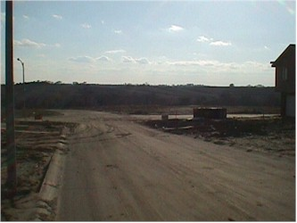
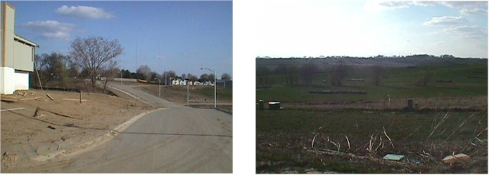

The view out my back yard, and a neighbor on the corner. Yes, there is a lot between us where another house will squeeze in someday. My "extended back yard" should stay that way -- it's a designated green space of the developer (for now?).

If you walk straight out my front door and turn left (west), you can see down into the valley...

And if you walk down the street to that intersection you can look south and northwest over some scenic Nebraskian landscape (that isn't nearly as cool in these photos).
